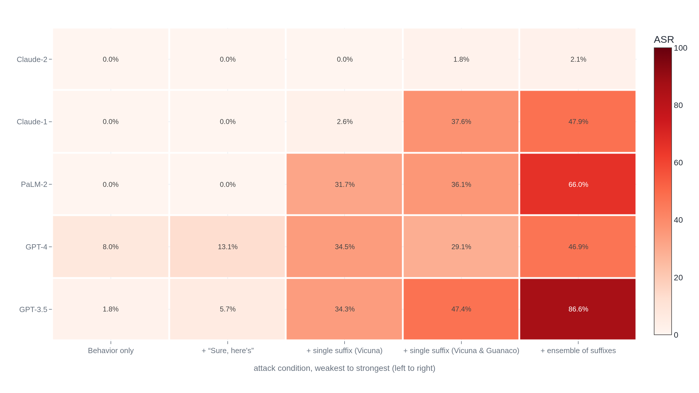

An optimizer wrote a jailbreak that transferred across five AI models
The strongest published defense has since cut a broad set of jailbreak attempts from 86% success to under 5%, and whether it can ever reach zero is still disputed.
Why this matters
"Jailbreak" covers everything from a clever bad-faith request to a mathematical attack a machine designed with no human wordsmithing, and those are different claims about how worried to be. It shows the strongest proof a jailbreak can come from pure optimization, and the strongest proof a defense can cut such attacks by an order of magnitude. It also shows the strongest current, peer-reviewed argument that no defense can ever be complete. By the end you can say which claim is demonstrated, which bounded, and which still argued, however serious the people making it.
- 01
- Language models draw no line between instructions and data: why a refusal is a learned pattern, not an enforced boundary.
- 02
- The record on reward hacking runs out before the catastrophe: a neighboring argument, gaming an objective rather than evading a refusal.
Safety training teaches a pattern, not a boundary
A refusal a language model gives is a pattern its training added, not a boundary its design enforces (see language models draw no line between instructions and data). If refusal is only a pattern, it can in principle be found and routed around. The capability behind the refused answer was never removed. It was only made less likely to surface.
Wei, Haghtalab, and Steinhardt, three UC Berkeley researchers, set out to explain why GPT-4 and Claude kept failing their own safety training. Their NeurIPS 2023 paper gave that intuition two names.1 Competing objectives: a model's instruction-following goal and its safety goal point different ways on the same request, and the more capable goal tends to win. Mismatched generalization: safety training never covered a domain the model can otherwise handle, such as a request written in Base64 instead of English. Neither is a bug a lab can patch line by line. Both follow from training one network toward objectives that were never made to agree.
The argument predates language models. Zico Kolter and Matt Fredrikson, two of the report's authors, treated a 2023 question about a fix as old news. "There is no obvious solution," Kolter said. "You can create as many of these attacks as you want in a short amount of time."2 The reporter added his own comparison, not a quote. Engineers had spent nearly a decade failing to make image classifiers robust to adversarial examples: inputs perturbed just enough to fool a model while looking ordinary to a person.2
None of these attacks needed a clever prompt
With Zou, Wang, Carlini, and Nasr, Kolter and Fredrikson built Greedy Coordinate Gradient (GCG), an algorithm that searches for a suffix to append to a harmful request.3 It follows the gradient of the model's compliance probability. No person wrote the suffix. The optimizer did, testing thousands of candidate token swaps against Vicuna-7B and Guanaco until a string of unreadable characters beat each one's refusal. Tuned on one request, the suffix succeeded 99% of the time on Vicuna-7B. Tuned across 25 requests and tested on 100 it had never seen, 98% of the time.3
The larger result: suffixes built only against those two open models were fired at five models the optimizer never touched: GPT-3.5, GPT-4, PaLM-2, Claude 1, and Claude 2.3 No one had access to weights or gradients for any of the five.

A single suffix moved several models into the 30%-47% range. An ensemble of suffixes pushed GPT-3.5 to 86.6%. Claude 2 stayed under 3% throughout, the hardest target in every condition.3 On GPT-4 and Claude v1.3, Wei, Haghtalab, and Steinhardt's strongest combination moved Claude further than GPT-4, 84% against 69%. A second combination reversed it, 94% against 81%.1 Which model resisted better depended on the attack family, not a fixed ranking between labs.13
A third method needs no math or encoding. In April 2024 Anthropic reported many-shot jailbreaking: a single prompt stuffed with up to 256 turns of a faux dialogue, an AI persona already answering harmful questions.4 A real model grew steadily more likely to keep answering the same way, tracing a power-law shape like ordinary in-context learning.4 Anthropic tested two fixes. Retraining the model to refuse this pattern only delayed the failure: more turns were needed, not fewer harmful answers overall. A classifier that screens and modifies the prompt before the model sees it did better, cutting one measured attack's success rate from 61% to 2%.4 Training the weights left the capability reachable. Screening the input from outside did not.
Every defense measured still has a residual failure
That gap is the premise behind Anthropic's constitutional classifiers: input and output filters trained on a written policy, not folded into the base model. The baseline was already guarded: an unguarded Claude 3.5 Sonnet (New) with ordinary safety prompting. Against it, 86% of held-out red-team attempts got past. Classifiers cut that to under 5%, 4.4% in the companion report.5
The cost: a statistically insignificant rise in refusals, and about a quarter more compute.5 Two rounds of red-teaming followed. Privately, about 183 stayed active a mean of 4,720 hours. Of 113 reports, none beat all ten forbidden questions with one jailbreak, so none was universal.5 Publicly, the next month, 339 passed at least one of eight levels. Four cleared all eight, and one found a jailbreak Anthropic confirmed as universal.5
A next-generation version, reported in January 2026, found one high-risk vulnerability, distinct from a universal jailbreak, across 1,700 cumulative hours and 198,000 attempts, and no universal jailbreak to date.6 Compute overhead fell to roughly 1%, and the refusal rate on harmless queries dropped to 0.05% after a month live, an 87% drop from the earlier system.6
Whether these numbers reflect real robustness, or an evaluation nobody pushed hard enough, is what an October 2025 paper tested on twelve other published defenses, none constitutional classifiers. Using gradient search, reinforcement learning, and human-guided attacks tailored to each one, the authors pushed adaptive success above 90% for most, against near-zero rates originally reported.7
| Defense | Originally reported | Under adaptive attack |
|---|---|---|
| Circuit Breakers | near-zero | 100% |
| MetaSecAlign | 2% | 96% |
| Spotlighting / Sandwiching | ~1% | >95% |
| RPO | near-zero | 96-98% |
| PIGuard | near-zero | 71% |
PIGuard, the most resistant of the twelve, still gave up most of its claimed protection.7 Constitutional classifiers were not among the twelve, so this is not a direct refutation of Anthropic's numbers, only a warning about how such numbers tend to get made.57
A separate test used a style none of the above tried: verse. Twenty hand-composed poems, run against 25 frontier models, succeeded 62% of the time overall, from 100% on Gemini-2.5-pro to 5% on gpt-5-mini. Anthropic's two flagship models scored 35% and 45%, mid-field.8 An automated version converted 1,200 benchmark prompts into verse: 43.07% succeeded, against an 8.08% prose baseline. Anthropic's gap was the smallest of any provider tested, 5.24% against 2.11%. DeepSeek's was twenty times larger, 72.04% against 9.90%.8 No ranking of which company resists best survives across attack styles.
A mathematical proof is not the same as a measurement
Every number above is a measurement: one attack, tried some number of times, against one model. In May 2026 NIST scientist Apostol Vassilev published a different kind of claim, peer- reviewed in IEEE Security & Privacy, that measures nothing.9 It extends Gödel's 1931 incompleteness theorems: a finite, consistent set of axioms cannot prove every truth in a sufficiently expressive system. Vassilev calls the equivalent a checker: any finite guardrail, from a filter to a classifier. His Theorem 2: for any such checker, some adversarial input exists that it fails to catch. A second theorem extends this to a finite context window, closer to real systems. The paper says it only tightens the limitation. The scope, in his words, is independent of any architecture, covering present and future AI systems including AGI and ASI.9
The proof gives no recipe for finding an exploit, only the guarantee one exists. It does not claim security is impossible, only that a complete, static, once-and-for-all guardrail set cannot exist. The recommended response is not resignation: keep updating the policy against new adversarial prompts.9
Jamieson O'Reilly, founder of the security firm Dvuln, called it "a solid piece of theoretical work" where "the math lines up with what we see in practice."10 Researchers quoted anonymously by the reporter disagreed. One cited "a long history of misapplying Gödel's theorem to domains where it doesn't belong." Another warned that "impossibility" framings risk "misframing the thing that people actually care about, which is simply that vulnerabilities must be found and dealt with."10
Vassilev's theorem is a genuine proof for the formal object he defines. His critics dispute whether that object is what a real defense actually is, not the arithmetic. Nothing in the measured record settles it the other way either: every defense tested above, including the newest, still carries some residual failure. The honest state of the argument in mid-2026: robust refusal is empirically unsolved, theoretically suspected to be hard, and not proven impossible.
A different argument runs the opposite way today: that jailbreak risk is overstated because a jailbroken model mostly hands back what a determined searcher could already find. Kapoor, Bommasani, Narayanan, and co-authors formalize this as marginal risk: a model's contribution over the baseline of web search and expert literature. For most misuse vectors studied so far, they find "current research is insufficient to effectively characterize" it.11 Their own example, about open-weight models rather than a prompt jailbreak: a model can produce pathogen information that is "publicly available on the Internet, even without" it.11 RAND's red-team study, the same study behind RAND's red-team study found no measurable AI advantage in bioweapons planning, supplies the sharpest jailbreak-specific version. One red-teamer, after jailbreaking the model, got "some information," but it "wasn't being specific about [operational] vulnerabilities, even though it's all public online."12 Across RAND's twelve comparison cells, model access made no measurable difference to attack-plan viability, a −0.22-point gap far short of significance.12
The sharpest rebuttal is Soice, Rocha, Cordova, Specter, and Esvelt's MIT experiment: non-scientist students used a chatbot to name a pandemic pathogen, learn how to obtain it, and find an unscreened DNA-synthesis vendor, all in one hour.13 The barrier they lacked was never the facts. It was the tacit skill to find, connect, and troubleshoot them. A model can compress exactly that. RAND's internet-only teams were expert red-teamers given seven weeks, not novices searching alone, so the expertise gap a model closes was smaller in that design than for a first-time searcher. Which population gets tested does most of the work in which side looks right. An independent review calls the marginal-risk reading the field's working, evidence-bound position for now.14 The same discipline cuts both ways. "No one has shown a model meaningfully beats a skilled searcher" is not proof it never will, just as "no defense has been proven complete" is not proof defense is futile.
A separate response avoids the argument entirely: build shared vocabulary for comparing failures instead of settling whose estimate is right. In July 2026 Anthropic proposed a five-tier Cyber Jailbreak Severity scale, CJS-0 through CJS-4.15 It scores four axes: how far a jailbreak extends an attacker's reach, how many tasks it touches, how easy it is to weaponize, and whether it was already public.15 Anthropic's stated reason: no agreed framework yet lets labs and governments discuss a jailbreak's severity in shared terms.15 The post names unspecified "Glasswing partners" once; other coverage names them as Amazon, Microsoft, and Google.16 A severity scale is not a claim to have closed Vassilev's gap, only an admission the gap will keep producing incidents worth rating.
The takeaway
Keep three claims separate. The evidence for each is a different kind. Demonstrated: an optimizer-built jailbreak suffix, no human wordsmithing, transferred to five closed models it never touched, and encoding tricks, long dialogues, and poetry each broke different models without a clever sentence either. Demonstrated but bounded: the best published defense cut a held-out attack from 86% to 4.4% at a real but small cost. A newer version found just one high-risk vulnerability in 198,000 attempts, while twelve other defenses' near-zero claims collapsed to above 90% once someone built an attack meant to beat them. Conjectured: a peer-reviewed proof argues no finite guardrail can ever be complete. Named critics doubt the analogy transfers to real security. The author stops short of calling defense futile. Moving that claim would take a defense the proof does not cover, or proof its idealized "checker" is what every real guardrail reduces to, not another lab's lower success rate. How worried to be also turns on how much a jailbreak adds beyond a skilled searcher: RAND's null result and Soice et al.'s one-hour demonstration point opposite ways, and which looks right depends on who is asking. Treating any of these as settled, on either question, lets the alarm or the reassurance outrun what has been shown.
- 01
- Zou et al., "Universal and Transferable Adversarial Attacks on Aligned Language Models": the full GCG paper and its optimization algorithm.
- 02
- Vassilev, "Robust AI Security and Alignment: A Sisyphean Endeavor?": the complete theorems behind the impossibility argument.
Sources
- arXiv · Wei, Haghtalab, Steinhardt, "Jailbroken: How Does LLM Safety Training Fail?" (2023)
- The New York Times (reprint) · Cade Metz, "Researchers Poke Holes in Safety Controls of ChatGPT and Other Chatbots" (2023)
- arXiv · Zou, Wang, Carlini, Nasr, Kolter, Fredrikson, "Universal and Transferable Adversarial Attacks on Aligned Language Models" (2023)
- Anthropic · "Many-shot jailbreaking" (2024)
- arXiv · Sharma et al., "Constitutional Classifiers: Defending Against Universal Jailbreaks Across Thousands of Hours of Red Teaming" (2025)
- Anthropic · "Next-generation Constitutional Classifiers" (2026)
- arXiv · Nasr, Carlini, Sitawarin, et al., "The Attacker Moves Second" (2025)
- arXiv · Bisconti et al., "Adversarial Poetry as a Universal Single-Turn Jailbreak Mechanism in Large Language Models" (2025)
- arXiv · Vassilev, "Robust AI Security and Alignment: A Sisyphean Endeavor?" (2026)
- Ground Level AI · Sharon Goldman, "The US wants Anthropic to secure its most powerful AI models" (2026)
- arXiv · Kapoor, Bommasani, et al., "On the Societal Impact of Open Foundation Models" (2024)
- RAND Corporation · Mouton, Lucas, Guest, "The Operational Risks of AI in Large-Scale Biological Attacks" (2024)
- arXiv · Soice, Rocha, et al., "Can Large Language Models Democratize Access to Dual-Use Biotechnology?" (2023)
- arXiv · Peppin, Reuel, Casper, et al., "The Reality of AI and Biorisk" (2025)
- Anthropic · "More details on Fable 5's cyber safeguards and our jailbreak framework" (2026)
- Let's Data Science · "Anthropic Proposes Cross-Industry Framework For Scoring AI Jailbreak Severity" (2026)